cosmic donut
golden hourglass
mandala
praying monkey


| 1. Installation | 4. Genome | |||
| 2. Introduction | 5. Gallery | |||
| 3. Automata | 6. Contact |
CellMorphs is a program for evolving cellular automata (CA). CA are complex dynamical systems that exhibit overall behavior that cannot be traced back to the underlying rules, that is, emergent or self-organized behavior. Complex systems typically consist of many similar, interacting, simple parts. 'Simple' means that the behavior of parts is easily understood, while the overall behavior of the system as a whole has no simple explanation. *
The CA of CellMorphs are based on Conway's Game of Life and the idea of evolution by aesthetic selection is derived from Richard Dawkins' Biomorphs. It starts with a classic game of life CA and five slightly mutated versions of it, all of which you see moving on the screen. Since you're smarter than the computer, you do the hard job of selection, while the computer generates new mutations. Here's how the program looks like:
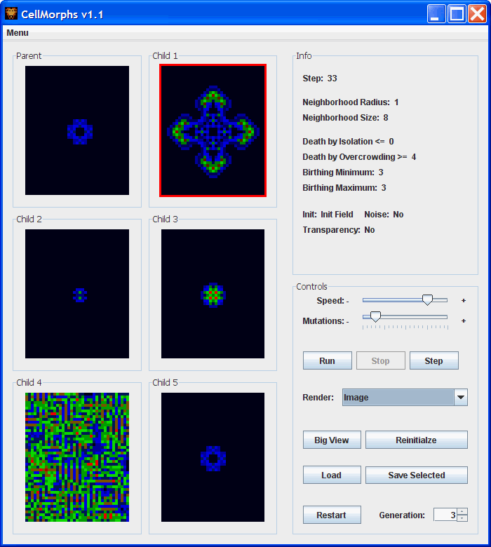
On the left side you see the parent cellmorph and five mutations (children) of it. Select one of them by clicking on it to display its genetic information on the right side in the info panel. The red border indicates your selection. Click on the selected cellmorph again to make it the parent of five new children. In the bottom right you see the control panel. Just experiment with the sliders and buttons to find out what you can do. The cellular automata section below will help you understand the genetic information and the different rendering modes.
The results of experimenting with CellMorphs will be surprising and possibilities are virtually endless! If you evolve something interesting, please save the cellmorph to a .cm file and e-mail it to me. Here are some examples I've evolved (also check out some animated examples in the gallery):
cosmic donut |
golden hourglass |
mandala |
praying monkey |
|---|---|---|---|
|
|
|
|
Note that the ontogenetic development of a cellmorph can be very interesting. Let's see how the monkey emerges over time (check out "praying monkey.ca" in the examples folder):
0 |
1 |
2 |
3 |
4 |
5 |
6 |
7 |
|---|---|---|---|---|---|---|---|
 |
 |
 |
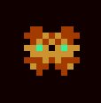 |
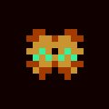 |
 |
 |
 |
8 |
9 |
10 |
11 |
12 |
13 |
14 |
15 |
 |
 |
 |
 |
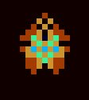 |
 |
 |
 |
16 |
17 |
18 |
19 |
20 |
21 |
22 |
23 |
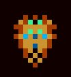 |
 |
 |
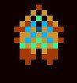 |
 |
 |
 |
 |
At the beginning, neither the shape nor the colors resemble a monkey. At step 2, there's a color switch in the object as well as in the background. Steps 3 to 5 kind of resemble an alarm clock, which is indeed the monkey's ancestor, because I had evolved the alarm clock first (see clock.ca in the examples folder). Note the analogy to embryology: Human and other embryos share morphogenetic stages with their ancestors (see prenatal development). Then we see some more development until at step 22, the full-grown praying monkey emerges and remains stable. In game of life terminology, small patterns that last a long time before stabilizing are called "methuselahs".
In general, cellular automata (CA) are mathematical models in which space and time are discrete: time proceeds in steps and space is represented as a lattice or array of cells. The cells have a set of properties (variables) that may change over time. The values of the variables of a specific cell at a given time are called the state of the cell.
Each cell has a set of local rules. Given the state of the cell and the states of the cells in its neighborhood these rules determine the state of the cell at the next time step. It is important to note that the states of all cells are updated simultaneously (synchronously) based on the (actual or current) values of the variables in their neighborhood according to the local rules. If all cells have the same set of rules the CA is called homogeneous.
CA have been employed to study pattern formation in nature, e.g. evolution of spiral galaxies or sea shell pattern formation.
| Shells | ||
|---|---|---|
| 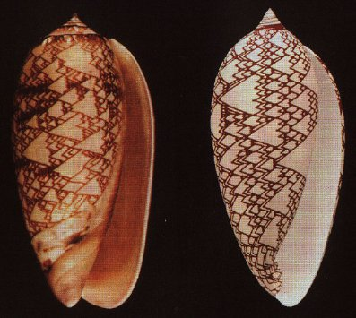 | 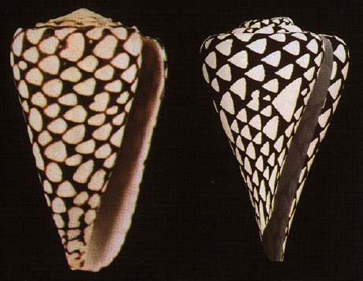 | |
| Natural shells on the left, simulated ones on the right. Meinhardt, H. (1995). The Algorithmic Beauty of Sea Shells. Springer Verlag. (p. 179, 180) | ||
The CA in CellMorphs have the following properties:
In order to better observe the dynamics of a CA, repeat the ontogenetic process using the reinitialize button and try different rendering modes:
As already stated, the cellular automata (CA) in CellMorphs are based on Conway's Game of Life which is defined by the following rules:
If you like, check out my 2D and 3D game of life simulators in the gol_2d and gol_3d directories (windows only). Here are some game of life examples (all animations created with my simulators):
| Random initialization | |
|---|---|
| 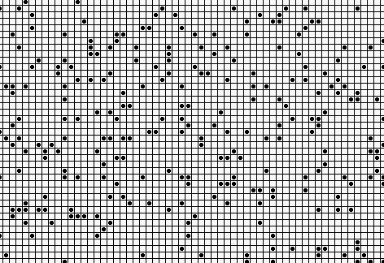 | Note the stable and the dynamic patterns. There's also a glider hitting a block on the left. |
| Spaceships | |
|---|---|
 |
Three moving spaceships of different size. |
| Washer | |
|---|---|
 |
Note the periodic patterns the washer creates. |
| Technodrome | |
|---|---|
 |
A 2x2x2 block is rapidly growing and morphing into a cuboid. |
| Duplicator | |
|---|---|
| 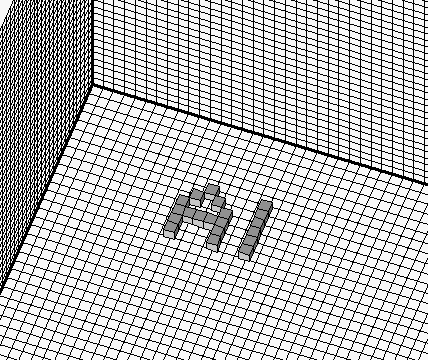 | Cubes with an odd number of neighbors live, the others die. That's all! Any pattern can be duplicated given this simple rule. |
The rules and properties of the cellular automata (CA) are stored in a genome with 20 genes. This amounts to roughly 4.6*10^124 possible genetic combinations to define CAs which can be displayed in roughly 2*10^10 different ways. That's just enough to keep you busy for a while I guess. Note that the vast majority of these CAs will be very boring. This is where the evolutionary approach of CellMorphs kicks in and helps you find your way towards the interesting combinations. Again, this bears analogy to the way nature works: Evolution by cumulative selection is an effective way to search the endless design space of genetically possible combinations (most of which are nonviable, or boring, so to speak). Here's the gene table:
Gene |
Description |
Init value |
Min value |
Max value |
Mutation step |
Alleles |
|---|---|---|---|---|---|---|
1. Init field mode |
0: CA starts with init field, 1: CA start is random |
0 |
- |
- |
1 |
2 |
2. Init field |
Contains the init field of the CA |
- |
- |
- |
- |
2^49 |
3. Random init density |
Density of random initialisation (percent) |
20 |
0 |
100 |
10 |
11 |
4. Noise |
0: noise off, 1: noise on |
0 |
0 |
1 |
1 |
2 |
5. Noise amount |
Probability of cell flip per step: value/10000 |
1 |
0 |
100 |
2 |
50 |
6. Cell size |
Size of cells in pixels |
4 |
1 |
20 |
1 |
20 |
7. Radius of neighborhood |
Radius of neighborhood in cells |
1 |
1 |
20 |
1 |
20 |
8. Shape of neighborhood |
Pattern of consideres neighbors around cell |
- |
- |
- |
- |
2^400 |
9. Isolation |
Game of Life rule: Cells die if they have <= x neighbors |
1 |
0 |
1000 |
1 |
1001 |
10. Overcrowding |
Game of Life rule: Cells die if they have >= x neighbors |
4 |
0 |
1000 |
1 |
1001 |
11. Birth minimum |
Game of Life rule: Cells become alive if they have >= x neighbors |
3 |
0 |
1000 |
1 |
1001 |
12. Birth maximum |
Game of Life rule: Cells become alive if they have <= x neighbors |
3 |
0 |
1000 |
1 |
1001 |
13. Red peak |
Maximum sensitivity of red color channel (living neighbors / size of neighborhood * 255) |
230 |
0 |
255 |
15 |
18 |
14. Green peak |
Maximum sensitivity of green color channel (living neighbors / size of neighborhood * 255) |
150 |
0 |
255 |
15 |
18 |
15. Blue peak |
Maximum sensitivity of blue color channel (living neighbors / size of neighborhood * 255) |
70 |
0 |
255 |
15 |
18 |
16. Red breadth |
Linear sensitivty spectrum of red color channel |
60 |
1 |
1000 |
15 |
66 |
17. Green breadth |
Linear sensitivty spectrum of green color channel |
60 |
1 |
1000 |
15 |
66 |
18. Blue breadth |
Linear sensitivty spectrum of blue color channel |
60 |
1 |
1000 |
15 |
66 |
19. Transparency |
0: no, 1: yes |
0 |
0 |
1 |
1 |
2 |
20. Transparency value |
Amount of transparenyc (0 = opaque, 255 = invisible) |
128 |
0 |
255 |
40 |
6 |
| Belt |
|---|
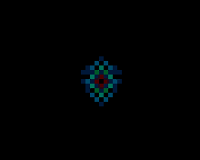A
belt is rolled out. Its borders are kind of glowy due to an alpha channel
effect. When it hits the walls, the gaps get filled. This only works if
the seed is exactly in the middle. |
| Water |
|---|
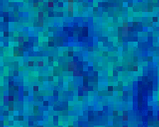Noise,
transparency and the evolved set of rules simulate a moving water surface.
It looks like there are two levels of depth: the moving water surface
in dark blue and the static ground in light blue and turquoise. |
| Duplicating Gliders | |
|---|---|
 Two
gliders are duplicating when hitting each other on the walls and in the
middle. They build self- Two
gliders are duplicating when hitting each other on the walls and in the
middle. They build self- |
 |
| Big Glider |
|---|
 Here
we see a big two- Here
we see a big two- |
| Praying Monkey |
|---|
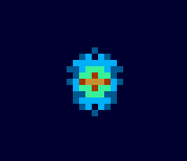The
praying monkey emerges after 22 steps and remains stable thereafter. For
a detailed analysis of its ontogenetic process see the introduction
section. |
| Persian Carpet |
|---|
 Following
similar dynamics like the belt, a persian carpet is rolled out. Changing
the size of the cellmorph results in different patterns. Following
similar dynamics like the belt, a persian carpet is rolled out. Changing
the size of the cellmorph results in different patterns. |
| Horizontal and Vertical |
|---|
 In
an explosive way, a structure with vertical and horizontal lines contained
in green borders emerges. Changing the size of the cellmorph leads to
different shapes. In
an explosive way, a structure with vertical and horizontal lines contained
in green borders emerges. Changing the size of the cellmorph leads to
different shapes. |
| Mountains and Rivers | |
|---|---|
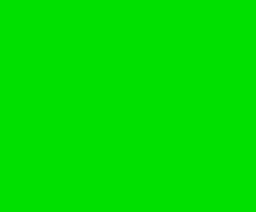At
first, mountains arise from a green plain. Then we get the impression
of flying over a landscape with a river. The illusion of movement emerges
due to the particular shape of the evolved neighborhood (on the right).
Cells act according to the state of their bottom, left and right
neighbors. The shape of the river is influenced by background noise, causing
it to flow left, right or straight. |
 |
| Inca Lady |
|---|
 The
inca lady was sent in by Markus Hausammann. We therefore finally see conclusive
scientific proof for the claim that Incas had green faces :). The
inca lady was sent in by Markus Hausammann. We therefore finally see conclusive
scientific proof for the claim that Incas had green faces :). |
* This section has been partly adopted from the unpublished script of the seminar on artificial life by Max Lungarella at the University of Zurich 2007.